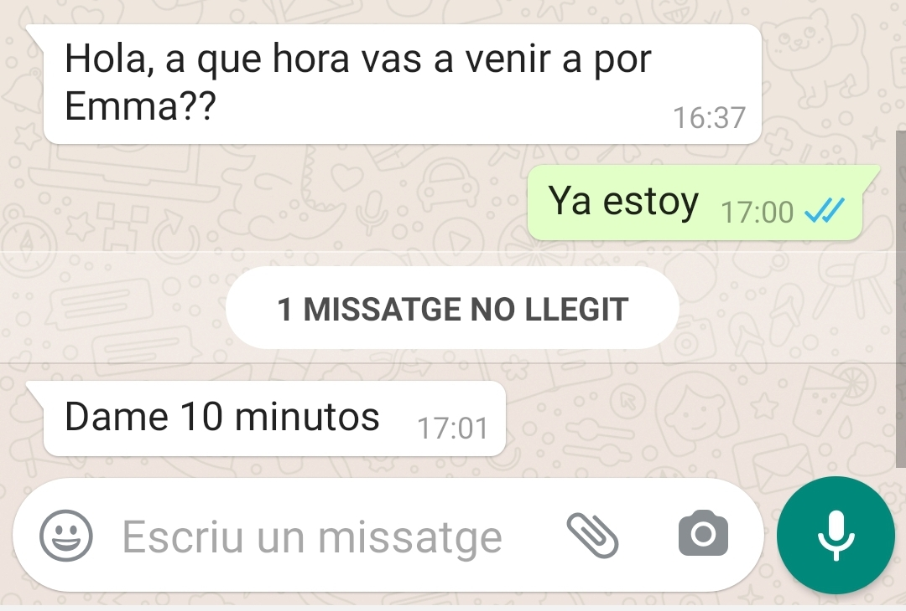

En cuanto a las visitas los días de diario: los miércoles por la tarde la pediatra del seguro no trabaja y, dado que la madre vive en Vallecas, yo consumiría bastante tiempo en conducir hasta otro. Sólo por facilitar las cosas para la pequeña, ¿sería posible otro día de la semana? ¿O alguna pernocta entre semana? Se han negado inicialmente a las pernoctas en días de diario, más adelante quizás consigamos cambiarlo. Carmen consultará la posibilidad del martes como día de visita.
Como te comentaba, me preocupa un poco la situación sanitaria de la niña. Desde octubre la madre comenzó a ocultarme información sobre esto: no dejándome ver la cartilla del pediatra a pesar de haberla pedido, no dejándome ver ni siquiera una fotografía de la niña durante 4 días cuando le “apareció” un hematoma en el ojo, no queriendo responder a mis preguntas ni contándome qué le había dicho la pediatra cuando le atendió telefónicamente. Y me preocupa especialmente su entorno debido a la pandemia de coronavirus: convive con seis personas de muy avanzada edad y constantes visitas, y sé que no han respetado las medidas de confinamiento puesto que me llegaron a entregar a la pequeña personas con las que no convive. De ahí que haya decidido llevarla al pediatra privado por mi cuenta.
También me gustaría saber qué hago cuando la madre me escribe acusando o con mentiras. ¿Contesto negándolo o mejor intento que no haya una relación discordante? El último caso: La semana pasada le propuse a la madre que acordásemos una rutina establecida de llamadas todos los días a las 19h; desde entonces, cada día se ha dedicado a retrasar la hora, colgarme, encenderle la televisión mientras hablamos, a pesar de que le pedí que no lo hiciera. Percibo que esto socava que yo pueda tener una relación con mi hija, lo que quizás en un futuro afecte a la custodia compartida. ¿Qué hacemos con esto? Lo que sucedió ayer: Tú me destacaste que yo si fuera puntual, lo que sucedió ayer cuando fui a recoger a Emma fue un retraso de 10 minutos. ya te comenté que su manera de actuar es crear conflictos no respetando al pie de la letra los acuerdos y responsabilizando de ello a la otra parte .
Es su estrategia. No enfrentarse a ella porque piensa que estarán grabando la conversación. Si es referente a la niña, simplemente haz lo contrario de su acusación: al día siguiente pregunta por ella. Tampoco hacer cosas raras como dejar a la niña sola y avisar a la madre. SEGUIR PREGUNTANDO POR EMMA.
Otra cosa que me preocupa es que la niña no ha ido ni un sólo día a la guardería este curso, sin que se me dijera ni yo pudiese participar en la decisión; la guardería es pagada por la empresa de la madre a través de un plan de compensación.HE CONFIRMADO EL DÍA 28 DE ENERO DE 2021 QUE EMMA NO HA IDO UN SÓLO DÍA A LA GUARDERÍA
Arañazo. te mando foto? No, ni te preocupes
